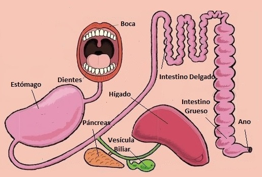
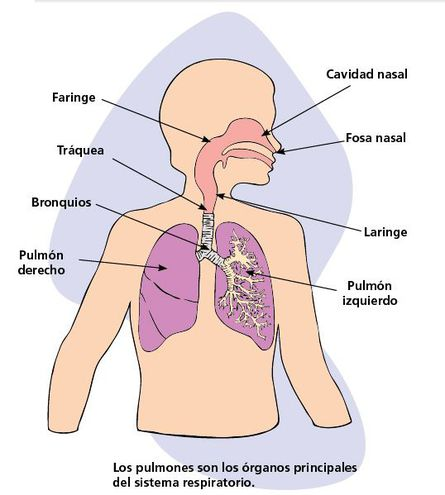
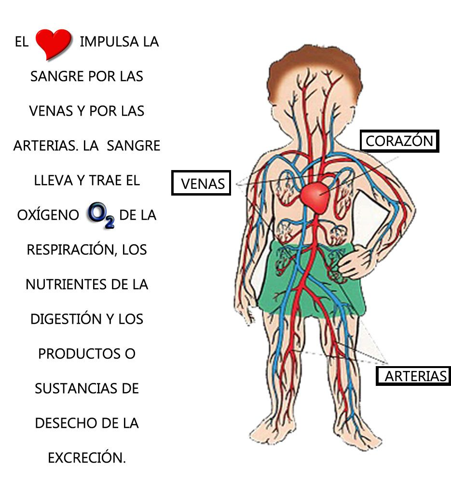
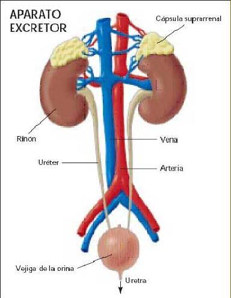

LOS NUTRIENTES:
Los nutrientes se pueden clasificar en varios grupos:
Hidratos de carbono o glúcidos. Nos aportan energía de forma rápida.
Grasas o lípidos. Aportan mucha energía aunque más lentamente que los glúcidos.
Proteínas. Son necesarias para crecer y para reparar nuestro cuerpo.
Vitaminas. Son imprescindibles para el buen funcionamiento de los procesos que ocurren en nuestro cuerpo.
Agua y sales minerales. Obtenemos agua al beberla y con los alimentos. Las sales minerales son fundamentales.
LA NUTRICIÓN PASO A PASO
La función de nutrición engloba varios procesos que ocurren en diversos aparatos y sistemas de nuestro organismo.
1. PROCESO DIGESTIVO

2. LA RESPIRACIÓN

3. LA CIRCULACIÓN

4. LA EXCRECIÓN
